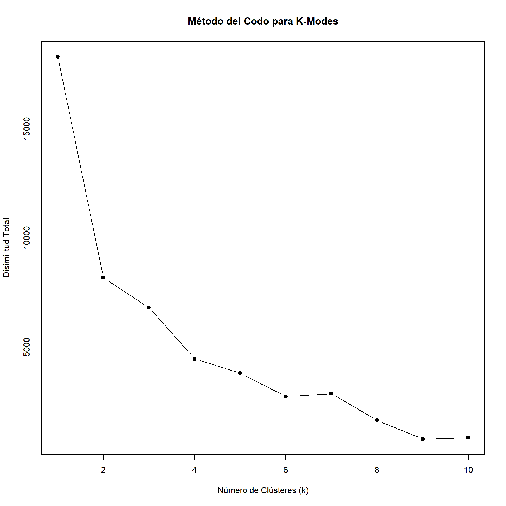
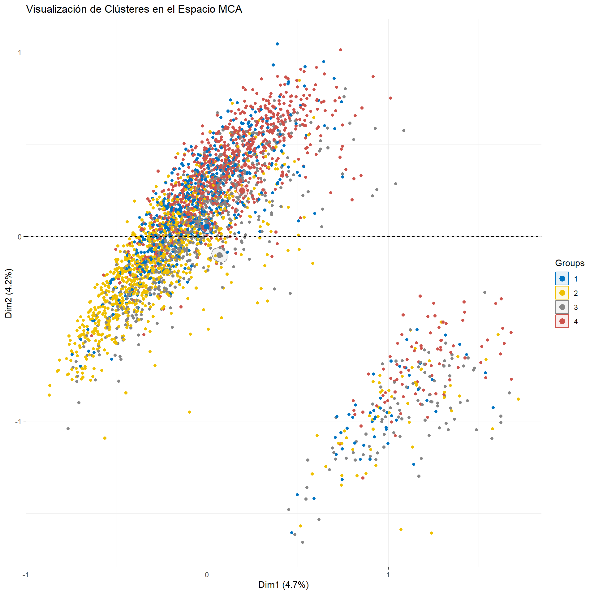
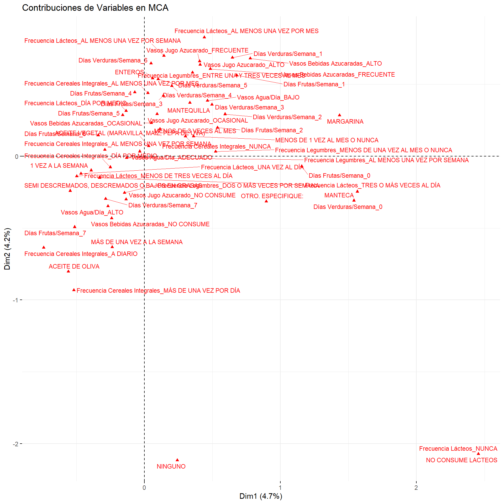
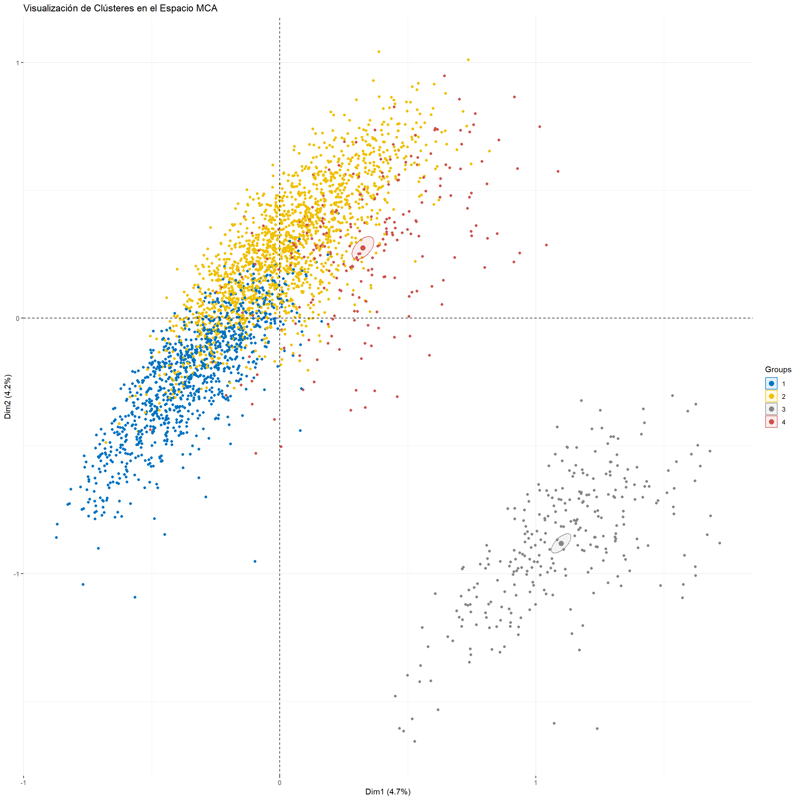
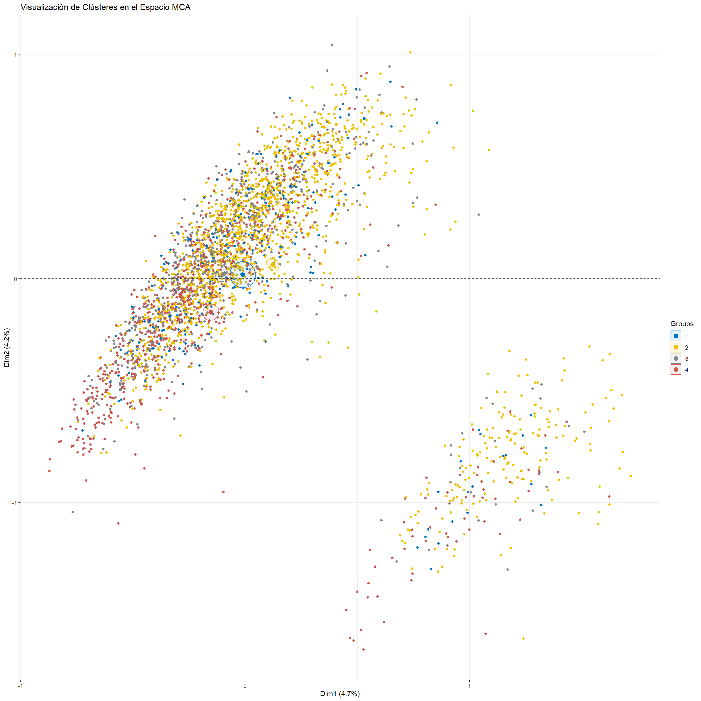
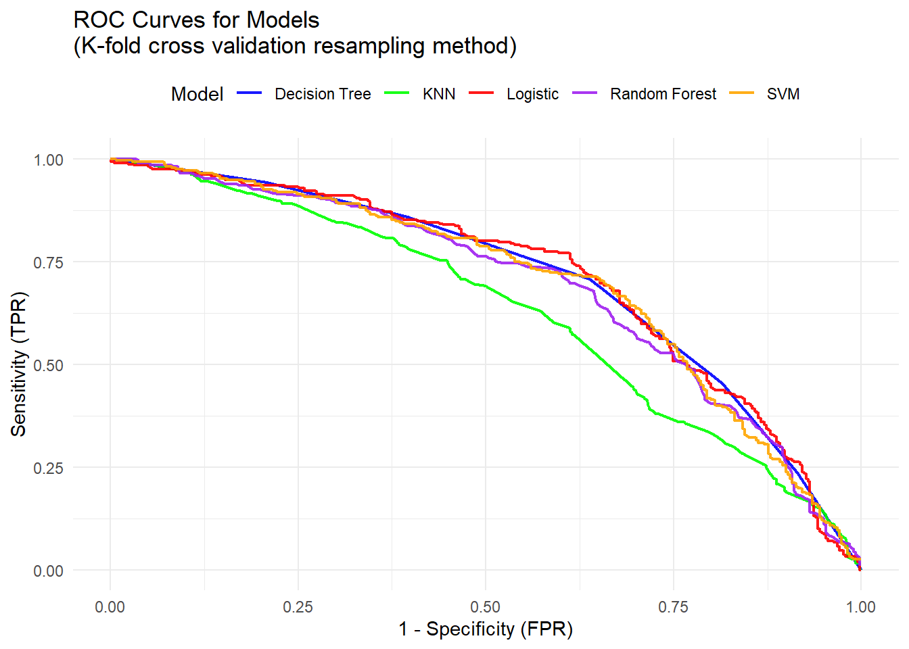
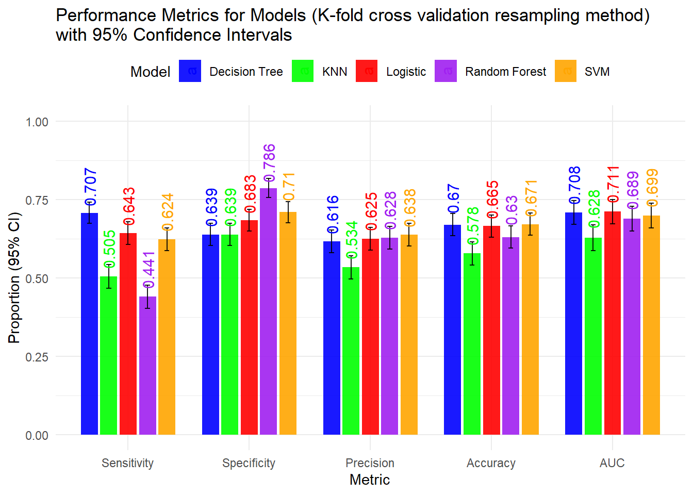
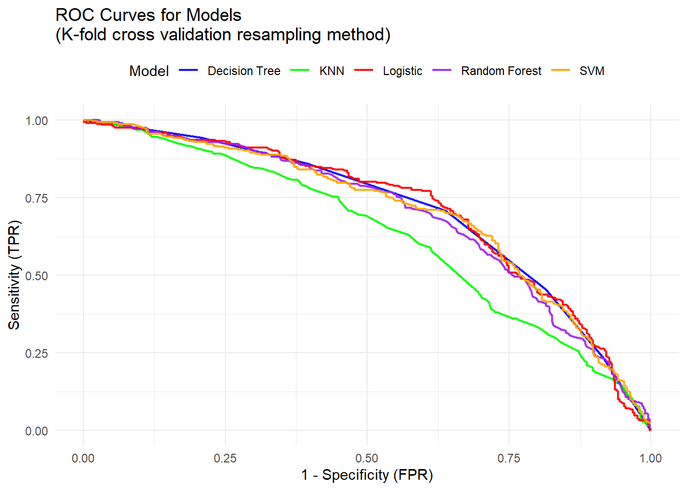
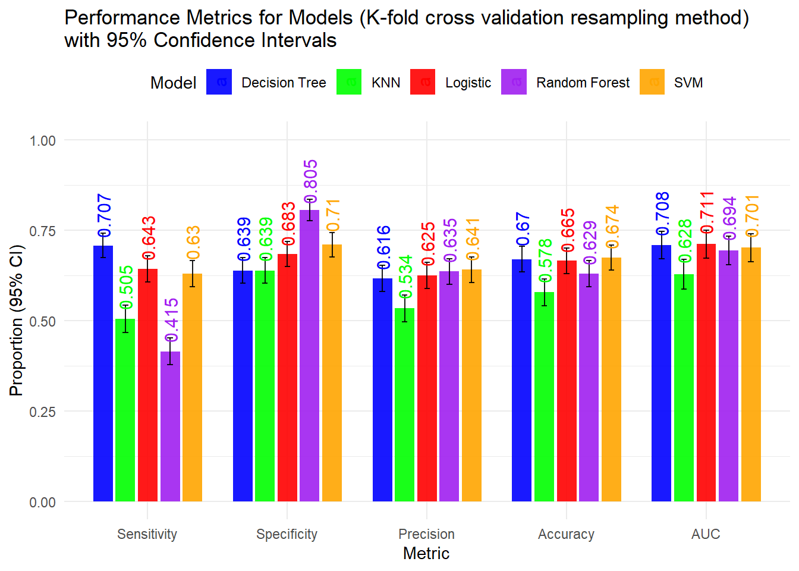

The Chile National Health Survey 2016-2017 (Encuesta Nacional de Salud 2016-2017) was conducted by the Department of Epidemiology of the Ministry of Health of Chile. This survey aimed to develop preventive health policies by collecting data from citizens aged 15 and over regarding their health status and subsequent treatment of illnesses.
The survey employed a probabilistic, geographically stratified, and multistage sampling design, ensuring national, regional, and urban-rural representativeness. A total of 6,233 individuals participated, with 5,520 undergoing laboratory tests.
Data collection encompassed a wide range of health-related topics, including:
Chronic diseases: hypertension, diabetes, cardiovascular diseases, and chronic kidney diseases.
Mental health: depressive symptoms and other mental health conditions.
Lifestyle factors: alcohol and tobacco use, physical activity, and dietary habits.
Nutritional status: assessments of obesity, undernutrition, and micronutrient deficiencies.
Oral health: evaluation of dental caries and other oral health issues.
Preventive behaviors: screening practices for various cancers and chronic diseases.
The information gathered is vital for formulating prevention plans, healthcare strategies, and public health policies tailored to the needs of the population. EPI MINSAL
For more detailed information and access to the survey’s datasets, you can visit the Department of Epidemiology’s website.
To explore and uncover dietary patterns in the dataset without predefined labels or outcomes, unsupervised machine learning techniques were employed. Specifically, hierarchical clustering and K-Modes clustering were used to identify potential groupings or clusters within the data. These methods are particularly suitable for datasets with mixed data types, including categorical and continuous variables.
3.1.1 K-Modes Clustering
For datasets dominated by categorical variables, K-Modes clustering was applied:
Initialization: The algorithm initialized cluster centroids using the “modes” of the data.
Optimization: Iterative updates minimized the dissimilarity within clusters using a categorical distance measure.
Cluster Assignments: Final cluster memberships were assigned to each observation, revealing underlying patterns in the data.
3.1.2 Hierarchical Clustering
Hierarchical clustering was performed to create a hierarchical representation of the data in the form of a dendrogram. The following steps were taken:
Distance Matrix Calculation: A dissimilarity matrix was computed using Gower’s Distance metric for categorical variables indefined(.
Clustering Algorithm: The Ward’s linkage method was applied to minimize intra-cluster variance. Dendrogram Visualization:
The dendrogram provided insights into the structure of the data and guided the determination of the optimal number of clusters.
3.1.3 Visualization
Dimensionality Reduction for Visualization To facilitate the visualization of high-dimensional data, dimensionality reduction techniques such as Multiple Correspondence Analysis (MCA) were applied: MCA was employed for categorical variables, providing a reduced feature space for cluster representation.
3.2 Machine Learning Supervised
3.2.1 Dataset splitting
The entire dataset was stratified and divided into two subsets, ensuring that both sets maintained the original proportion of classes in the dependent variable: the training set, comprising 80% of the total data, was employed to train the models. The test set, consisting of 20% of the total data, was reserved for the final evaluation of the models.
3.2.2 Models
Several Machine Learning models were selected to predict the dichotomous dependent variable (presence or absence of metabolic syndrome (MS)) using the following approaches: Logistic regression: Employing a classical approach to binary classification problems. Random forest: A decision-tree-based algorithm that combines multiple trees to enhance accuracy. Support Vector Machines (SVM): A model based on maximizing the classification margin. Decision trees: An algorithm based on recursive partitioning of data (utilizing the partial method). K-Nearest Neighbors (KNN): A distance-based classifier that predicts the class of an observation based on the classes of its nearest neighbors.
For each model, 10-fold cross-validation (CV) was applied to the training set. This procedure divides the data into 10 subsets or “folds,” using each fold once as the test set and the other nine as the training set. Cross-validation ensures that each observation is used for both training and testing, allowing for a robust estimation of model performance. Additionally, a bootstrap method was implemented to evaluate the stability of the models. Bootstrap is a sampling technique with replacement, in which multiple subsets of the data (in this case, 100 samples) are generated to train and evaluate the model in each sample. This allows the calculation of performance metrics that are more robust and less dependent on a single partition of data. Bootstrapping was particularly useful for assessing the variance in model performance and the sensitivity of performance to changes in the data.
3.2.3 Evaluation Metrics
To evaluate the performance of each model on the test set (20% set aside), the following metrics were calculated:
3.2.3.1 Sensitivity
Sensitivity is the proportion of true positives (correct prediction of MS) among all true positives:
The models were compared based on the aforementioned performance metrics to determine which one demonstrated superior accuracy, sensitivity, and specificity. Furthermore, the performance of each model was compared using the area under the Receiver Operating Characteristic (ROC) curve (AUC) to obtain an overall measure of the discriminatory capacity of the models.
4 Results
4.1 Machine learning Unsupervised
4.1.1 K-Modes clustering
Code
select_data2 <- select_data %>%as.data.frame() %>% dplyr::select( "Frecuencia Pescado/Mariscos","Frecuencia Lácteos","Tipo de Lácteos","Frecuencia Cereales Integrales","Frecuencia Legumbres","Días Frutas/Semana","Días Verduras/Semana","Vasos Agua/Día","Vasos Bebidas Azucaradas","Vasos Jugo Azucarado","Tipo de Aceite")# Probar diferentes valores de kset.seed(123)max_k <-10# Define el número máximo de clústeres a evaluardissimilarity <-numeric(max_k) # Vector para almacenar la disimilitud totalfor (k in1:max_k) { kmodes_model <-kmodes(select_data2, modes = k) dissimilarity[k] <- kmodes_model$withindiff # Suma de disimilitudes dentro de los clústeres}# Visualizar los resultadosplot(1:max_k, dissimilarity, type ="b", pch =19,xlab ="Número de Clústeres (k)", ylab ="Disimilitud Total",main ="Método del Codo para K-Modes")

Code
# Establecer el número de clústeresk <-4# Cambia el número de clústeres según lo que necesites# Aplicar K-Modesset.seed(291190) # Para reproducibilidadkmodes_model <- klaR::kmodes(select_data2, modes = k)mca_result <-MCA(select_data2, graph =FALSE)# Agregar los clústeres al dataset originalselect_data2$Cluster <-as.factor(kmodes_model$cluster)# Visualizar los clústeres en el espacio MCAfviz_mca_ind(mca_result,label ="none", # Ocultar etiquetas de individuoshabillage = select_data2$Cluster, # Usar los clústeres como colorpalette ="jco", # Paleta de coloresaddEllipses =TRUE, # Agregar elipses alrededor de los clústeresellipse.type ="confidence", # Elipses de confianzatitle ="Visualización de Clústeres en el Espacio MCA")

Code
# Visualizar las contribuciones de las variablesfviz_mca_var(mca_result,repel =TRUE, # Evitar la superposición de etiquetaslabelsize =3,title ="Contribuciones de Variables en MCA")

4.1.2 Hierarchical clustering
Code
# Calcular distancias entre individuos en el espacio MCAmca_coords <- mca_result$ind$coord # Coordenadas de los individuos en MCAdist_matrix <-dist(mca_coords, method ="euclidean") # Distancia Euclidiana# Clustering jerárquicohclust_model <-hclust(dist_matrix, method ="ward.D2")# Cortar el dendrograma en k clústeresclusters <-cutree(hclust_model, k =4)select_data2$Cluster <-as.factor(clusters)# Visualizar los clústeres en el espacio MCAfviz_mca_ind(mca_result,label ="none", # Ocultar etiquetas de individuoshabillage = select_data2$Cluster, # Usar los clústeres como colorpalette ="jco", # Paleta de coloresaddEllipses =TRUE, # Agregar elipses alrededor de los clústeresellipse.type ="confidence", # Elipses de confianzatitle ="Visualización de Clústeres en el Espacio MCA")

Code
# Graficar dendrograma# plot(hclust_model, # labels = FALSE, # main = "Dendrograma de Clustering Jerárquico",# xlab = "", ylab = "Altura")# # # Graficar el dendrograma con colores# fviz_dend(hclust_model, k = k, # rect = TRUE, # Dibujar rectángulos alrededor de los clústeres# rect_fill = TRUE, # Rellenar los rectángulos con color# rect_border = "jco", # Colores de borde# main = "Dendrograma con Clústeres")# Calcular matriz de disimilitud con Gower's distancedissimilarity_matrix <-daisy(select_data, metric ="gower")hclust_model <-hclust(as.dist(dissimilarity_matrix), method ="ward.D2")# Visualizar el dendrograma# plot(hclust_model, main = "Dendrograma para Variables Categóricas", # xlab = "", ylab = "Altura")# Cortar el dendrograma en k clústeresk <-4# Define el número de clústeresclusters <-cutree(hclust_model, k = k)select_data2$Cluster <-as.factor(clusters)# Visualizar los clústeres en el espacio MCAfviz_mca_ind(mca_result,label ="none", # Ocultar etiquetas de individuoshabillage = select_data2$Cluster, # Usar los clústeres como colorpalette ="jco", # Paleta de coloresaddEllipses =TRUE, # Agregar elipses alrededor de los clústeresellipse.type ="confidence", # Elipses de confianzatitle ="Visualización de Clústeres en el Espacio MCA")

Code
# Visualizar el dendrograma con factoextra# fviz_dend(hclust_model, k = k, rect = TRUE, rect_fill = TRUE, rect_border = "jco",# main = "Dendrograma con Clústeres")
4.2 Machine Learning Supervised
4.2.1 Cross Validation with 10 K-fold
Code
# Limpiar los nombres de las columnasselect_data <- select_data %>%clean_names()# Limpiar los labels de los factoresselect_data <- select_data %>%mutate(across(where(is.factor), ~fct_relabel(.x, janitor::make_clean_names)))# Dividir los datos en conjunto de entrenamiento y prueba (80% entrenamiento, 20% prueba)set.seed(123)train_index <-createDataPartition(select_data$sindrome_metabolico, p =0.8, list =FALSE)train_data <- select_data[train_index, ]test_data <- select_data[-train_index, ]# Definir el control de entrenamiento para validación cruzadacontrol <-trainControl(method ="cv", number =10, classProbs =TRUE, summaryFunction = twoClassSummary, returnResamp ="all" )# Modelo 1: Regresión logísticalogistic_model <-train(sindrome_metabolico ~ ., data = train_data, method ="glm", family ="binomial", trControl = control, metric ="ROC")# Modelo 2: Random Forestrf_model <-train(sindrome_metabolico ~ ., data = train_data, method ="rf", trControl = control, metric ="ROC")# Modelo 3: Support Vector Machine (SVM)svm_model <-train(sindrome_metabolico ~ ., data = train_data, method ="svmRadial", trControl = control, metric ="ROC")# Modelo 4: Árbol de decisión con rparttree_model <-train(sindrome_metabolico ~ ., data = train_data, method ="rpart", trControl = control, metric ="ROC")# Modelo 5: K-Nearest Neighbors (KNN)knn_model <-train(sindrome_metabolico ~ ., data = train_data, method ="knn", trControl = control, metric ="ROC")# Evaluación de los modelos en el conjunto de pruebalogistic_pred <-predict(logistic_model, test_data)rf_pred <-predict(rf_model, test_data)svm_pred <-predict(svm_model, test_data)tree_pred <-predict(tree_model, test_data)knn_pred <-predict(knn_model, test_data)# Calcular las métricas para cada modelologistic_cm <-confusionMatrix(logistic_pred, test_data$sindrome_metabolico, positive ="si")rf_cm <-confusionMatrix(rf_pred, test_data$sindrome_metabolico, positive ="si")svm_cm <-confusionMatrix(svm_pred, test_data$sindrome_metabolico, positive ="si")tree_cm <-confusionMatrix(tree_pred, test_data$sindrome_metabolico, positive ="si")knn_cm <-confusionMatrix(knn_pred, test_data$sindrome_metabolico, positive ="si")# # Mostrar las métricas de evaluación# logistic_cm$byClass # Sensibilidad, Especificidad, Precisión, etc. para la regresión logística# rf_cm$byClass # Sensibilidad, Especificidad, Precisión, etc. para Random Forest# svm_cm$byClass # Sensibilidad, Especificidad, Precisión, etc. para SVM# tree_cm$byClass # Sensibilidad, Especificidad, Precisión, etc. para Árbol de Decisión# knn_cm$byClass # Sensibilidad, Especificidad, Precisión, etc. para KNN
Code
# Modelos en una listamodels <-list(Logistic = logistic_model,"Random Forest"= rf_model,SVM = svm_model,"Decision Tree"= tree_model,KNN = knn_model)# Función para generar predicciones, curvas ROC y AUCget_roc_data <-function(model, test_data, label_col ="sindrome_metabolico") { prob <-predict(model, test_data, type ="prob")[, "si"] roc_curve <-roc(test_data[[label_col]], prob) auc_val <-auc(roc_curve) ci_val <-ci.auc(roc_curve)list(roc = roc_curve, auc = auc_val, ci = ci_val)}# Generar ROC y AUC para todos los modelosroc_results <-lapply(models, get_roc_data, test_data = test_data)# Crear un dataframe con los valores de AUC y su ICauc_data <-data.frame(Model =names(roc_results),AUC =sapply(roc_results, function(x) x$auc),Lower =sapply(roc_results, function(x) x$ci[1]),Upper =sapply(roc_results, function(x) x$ci[3]))# Crear las coordenadas ROC para graficarfpr_seq <-seq(0, 1, length.out =2000)roc_data <-data.frame(FPR =rep(fpr_seq, times =length(models)),TPR =unlist(lapply(roc_results, function(x) coords(x$roc, x = fpr_seq, input ="specificity", ret ="sensitivity"))),Model =rep(names(models), each =length(fpr_seq)))# Graficar las curvas ROCggplot(roc_data, aes(x = FPR, y = TPR, color = Model)) +geom_line(size =0.8, alpha =0.9) +labs(title ="ROC Curves for Models \n(K-fold cross validation resampling method)", x ="1 - Specificity (FPR)", y ="Sensitivity (TPR)") +theme_minimal() +scale_color_manual(values =c("blue", "green", "red", "purple", "orange")) +theme(legend.position ="top")

Code
# Crear un dataframe vacío para almacenar las métricasmetrics_data <-data.frame()# Función para calcular IC de proporcionescalc_ci <-function(p, n, z =1.96) { se <-sqrt((p * (1- p)) / n)c(lower = p - z * se, upper = p + z * se)}# Extraer métricas y AUC de cada modelofor (model_name innames(models)) {# Confusion matrix for standard metrics cm <-confusionMatrix(predict(models[[model_name]], test_data), test_data$sindrome_metabolico,positive ="si")# Verificar nombres en cm$byClass para obtener la métrica correcta sensitivity <- cm$byClass["Sensitivity"] specificity <- cm$byClass["Specificity"] precision <- cm$byClass["Precision"] # Precisión es Pos Predictive Value accuracy <- cm$overall["Accuracy"]# Calcular las métricas estándar model_metrics <-data.frame(Model = model_name,Metric =c("Sensitivity", "Specificity", "Precision", "Accuracy"),Value =c(sensitivity, specificity, precision, accuracy),stringsAsFactors =FALSE )# Calcular los IC para las métricas estándar model_metrics$Lower <-sapply(model_metrics$Value, function(x) calc_ci(x, nrow(test_data))[1]) model_metrics$Upper <-sapply(model_metrics$Value, function(x) calc_ci(x, nrow(test_data))[2])# Extraer el AUC para el modelo auc_val <- roc_results[[model_name]]$auc auc_ci <- roc_results[[model_name]]$ci# Agregar el AUC como una métrica auc_metric <-data.frame(Model = model_name,Metric ="AUC",Value = auc_val,Lower = auc_ci[1],Upper = auc_ci[3],stringsAsFactors =FALSE )# Combinar las métricas estándar con el AUC model_metrics <-rbind(model_metrics, auc_metric)# Agregar al dataframe general metrics_data <-rbind(metrics_data, model_metrics)}# Reordenar las métricas en el data framemetrics_data$Metric <-factor(metrics_data$Metric, levels =c("Sensitivity", "Specificity", "Precision", "Accuracy", "AUC"))# Graficar las métricas con el nuevo orden (incluyendo AUC) con IC para cada modelo y valores encimaggplot(metrics_data, aes(x = Metric, y = Value, fill = Model)) +geom_bar(stat ="identity", position =position_dodge(width =0.8), width =0.7,alpha =0.9) +geom_errorbar(aes(ymin = Lower, ymax = Upper), position =position_dodge(width =0.8), width =0.2, color ="black",alpha =0.9) +geom_text(aes(label =round(Value, 3), y = Upper +0.05, color = Model), position =position_dodge(width =0.8), angle =90, vjust =0.5, size =4) +# Valores rotados en 90 grados, justo arriba de los intervalos superioreslabs(title ="Performance Metrics for Models (K-fold cross validation resampling method) \nwith 95% Confidence Intervals",x ="Metric",y ="Proportion (95% CI)") +theme_minimal() +scale_fill_manual(values =c("blue", "green", "red", "purple", "orange")) +scale_color_manual(values =c("blue", "green", "red", "purple", "orange")) +# Asegurando que los colores coincidanylim(0, 1) +theme(legend.position ="top")

Code
logistic_summary <-summary(logistic_model$finalModel)logistic_df <-as.data.frame(logistic_summary$coefficients)logistic_df$OR <-exp(logistic_df$Estimate)logistic_df$OR_Lower <-exp(logistic_df$Estimate -1.96* logistic_df$`Std. Error`)logistic_df$OR_Upper <-exp(logistic_df$Estimate +1.96* logistic_df$`Std. Error`)colnames(logistic_df) <-c("Estimate", "Std. Error", "z value", "Pr(>|z|)", "Odds Ratio (OR)", "OR 95% CI Lower", "OR 95% CI Upper")logistic_df %>%kbl(caption ="Summary of Logistic Regression Model Coefficients with Odds Ratio and 95% Confidence Interval") %>%kable_styling(bootstrap_options =c("striped", "hover", "condensed", "responsive"))
Summary of Logistic Regression Model Coefficients with Odds Ratio and 95% Confidence Interval
# Definir el control de entrenamiento para validación cruzadacontrol <-trainControl(method ="boot", number =100, classProbs =TRUE, summaryFunction = twoClassSummary)# Modelo 1: Regresión logísticalogistic_model <-train(sindrome_metabolico ~ ., data = train_data, method ="glm", family ="binomial", trControl = control, metric ="ROC")# Modelo 2: Random Forestrf_model <-train(sindrome_metabolico ~ ., data = train_data, method ="rf", trControl = control, metric ="ROC")# Modelo 3: Support Vector Machine (SVM)svm_model <-train(sindrome_metabolico ~ ., data = train_data, method ="svmRadial", trControl = control, metric ="ROC")
line search fails -1.72 -0.0197 1.01e-05 -4.21e-06 -4.82e-08 3.84e-09 -5.05e-13
Code
# Modelo 4: Árbol de decisión con rparttree_model <-train(sindrome_metabolico ~ ., data = train_data, method ="rpart", trControl = control, metric ="ROC")# Modelo 5: K-Nearest Neighbors (KNN)knn_model <-train(sindrome_metabolico ~ ., data = train_data, method ="knn", trControl = control, metric ="ROC")# Evaluación de los modelos en el conjunto de pruebalogistic_pred <-predict(logistic_model, test_data)rf_pred <-predict(rf_model, test_data)svm_pred <-predict(svm_model, test_data)tree_pred <-predict(tree_model, test_data)knn_pred <-predict(knn_model, test_data)# Calcular las métricas para cada modelologistic_cm <-confusionMatrix(logistic_pred, test_data$sindrome_metabolico, positive ="si")rf_cm <-confusionMatrix(rf_pred, test_data$sindrome_metabolico, positive ="si")svm_cm <-confusionMatrix(svm_pred, test_data$sindrome_metabolico, positive ="si")tree_cm <-confusionMatrix(tree_pred, test_data$sindrome_metabolico, positive ="si")knn_cm <-confusionMatrix(knn_pred, test_data$sindrome_metabolico, positive ="si")# # Mostrar las métricas de evaluación# logistic_cm$byClass # Sensibilidad, Especificidad, Precisión, etc. para la regresión logística# rf_cm$byClass # Sensibilidad, Especificidad, Precisión, etc. para Random Forest# svm_cm$byClass # Sensibilidad, Especificidad, Precisión, etc. para SVM# tree_cm$byClass # Sensibilidad, Especificidad, Precisión, etc. para Árbol de Decisión# knn_cm$byClass # Sensibilidad, Especificidad, Precisión, etc. para KNN
Code
# Modelos en una listamodels <-list(Logistic = logistic_model,"Random Forest"= rf_model,SVM = svm_model,"Decision Tree"= tree_model,KNN = knn_model)# Función para generar predicciones, curvas ROC y AUCget_roc_data <-function(model, test_data, label_col ="sindrome_metabolico") { prob <-predict(model, test_data, type ="prob")[, "si"] roc_curve <-roc(test_data[[label_col]], prob) auc_val <-auc(roc_curve) ci_val <-ci.auc(roc_curve)list(roc = roc_curve, auc = auc_val, ci = ci_val)}# Generar ROC y AUC para todos los modelosroc_results <-lapply(models, get_roc_data, test_data = test_data)# Crear un dataframe con los valores de AUC y su ICauc_data <-data.frame(Model =names(roc_results),AUC =sapply(roc_results, function(x) x$auc),Lower =sapply(roc_results, function(x) x$ci[1]),Upper =sapply(roc_results, function(x) x$ci[3]))# Crear las coordenadas ROC para graficarfpr_seq <-seq(0, 1, length.out =2000)roc_data <-data.frame(FPR =rep(fpr_seq, times =length(models)),TPR =unlist(lapply(roc_results, function(x) coords(x$roc, x = fpr_seq, input ="specificity", ret ="sensitivity"))),Model =rep(names(models), each =length(fpr_seq)))# Graficar las curvas ROCggplot(roc_data, aes(x = FPR, y = TPR, color = Model)) +geom_line(size =0.8, alpha =0.9) +labs(title ="ROC Curves for Models \n(K-fold cross validation resampling method)", x ="1 - Specificity (FPR)", y ="Sensitivity (TPR)") +theme_minimal() +scale_color_manual(values =c("blue", "green", "red", "purple", "orange")) +theme(legend.position ="top")

Code
# Crear un dataframe vacío para almacenar las métricasmetrics_data <-data.frame()# Función para calcular IC de proporcionescalc_ci <-function(p, n, z =1.96) { se <-sqrt((p * (1- p)) / n)c(lower = p - z * se, upper = p + z * se)}# Extraer métricas y AUC de cada modelofor (model_name innames(models)) {# Confusion matrix for standard metrics cm <-confusionMatrix(predict(models[[model_name]], test_data), test_data$sindrome_metabolico,positive ="si")# Verificar nombres en cm$byClass para obtener la métrica correcta sensitivity <- cm$byClass["Sensitivity"] specificity <- cm$byClass["Specificity"] precision <- cm$byClass["Precision"] # Precisión es Pos Predictive Value accuracy <- cm$overall["Accuracy"]# Calcular las métricas estándar model_metrics <-data.frame(Model = model_name,Metric =c("Sensitivity", "Specificity", "Precision", "Accuracy"),Value =c(sensitivity, specificity, precision, accuracy),stringsAsFactors =FALSE )# Calcular los IC para las métricas estándar model_metrics$Lower <-sapply(model_metrics$Value, function(x) calc_ci(x, nrow(test_data))[1]) model_metrics$Upper <-sapply(model_metrics$Value, function(x) calc_ci(x, nrow(test_data))[2])# Extraer el AUC para el modelo auc_val <- roc_results[[model_name]]$auc auc_ci <- roc_results[[model_name]]$ci# Agregar el AUC como una métrica auc_metric <-data.frame(Model = model_name,Metric ="AUC",Value = auc_val,Lower = auc_ci[1],Upper = auc_ci[3],stringsAsFactors =FALSE )# Combinar las métricas estándar con el AUC model_metrics <-rbind(model_metrics, auc_metric)# Agregar al dataframe general metrics_data <-rbind(metrics_data, model_metrics)}# Reordenar las métricas en el data framemetrics_data$Metric <-factor(metrics_data$Metric, levels =c("Sensitivity", "Specificity", "Precision", "Accuracy", "AUC"))# Graficar las métricas con el nuevo orden (incluyendo AUC) con IC para cada modelo y valores encimaggplot(metrics_data, aes(x = Metric, y = Value, fill = Model)) +geom_bar(stat ="identity", position =position_dodge(width =0.8), width =0.7,alpha =0.9) +geom_errorbar(aes(ymin = Lower, ymax = Upper), position =position_dodge(width =0.8), width =0.2, color ="black",alpha =0.9) +geom_text(aes(label =round(Value, 3), y = Upper +0.05, color = Model), position =position_dodge(width =0.8), angle =90, vjust =0.5, size =4) +# Valores rotados en 90 grados, justo arriba de los intervalos superioreslabs(title ="Performance Metrics for Models (K-fold cross validation resampling method) \nwith 95% Confidence Intervals",x ="Metric",y ="Proportion (95% CI)") +theme_minimal() +scale_fill_manual(values =c("blue", "green", "red", "purple", "orange")) +scale_color_manual(values =c("blue", "green", "red", "purple", "orange")) +# Asegurando que los colores coincidanylim(0, 1) +theme(legend.position ="top")

Code
logistic_summary <-summary(logistic_model$finalModel)logistic_df <-as.data.frame(logistic_summary$coefficients)logistic_df$OR <-exp(logistic_df$Estimate)logistic_df$OR_Lower <-exp(logistic_df$Estimate -1.96* logistic_df$`Std. Error`)logistic_df$OR_Upper <-exp(logistic_df$Estimate +1.96* logistic_df$`Std. Error`)colnames(logistic_df) <-c("Estimate", "Std. Error", "z value", "Pr(>|z|)", "Odds Ratio (OR)", "OR 95% CI Lower", "OR 95% CI Upper")logistic_df %>%kbl(caption ="Summary of Logistic Regression Model Coefficients with Odds Ratio and 95% Confidence Interval") %>%kable_styling(bootstrap_options =c("striped", "hover", "condensed", "responsive"))
Summary of Logistic Regression Model Coefficients with Odds Ratio and 95% Confidence Interval
![]()